Maquininha Stone no ERP e no PDV
No ERP da Olist, você consulta as maquininhas, vincula a conta Stone, acompanha a instalação e configura o gateway Stone POS. Também dá para ver o que o plano libera de frente de caixa, controle de caixa e maquininhas integradas.
No PDV da Olist, você consulta pedidos em aberto da Stone e registra a sangria de caixa. A lista de maquininhas fica em Configurações > Configurações ERP > Finanças > Configurações das maquininhas de cartão.
Pré-requisitos
- Para cadastrar a maquininha Stone pela tela, a área Integração Stone precisa estar instalada.
- Para usar a Stone no PDV, é preciso ter um meio de pagamento Stone POS habilitado.
Importante
- Se o limite do plano aparecer como 01/01, adicionar maquininha não abre um cadastro em branco. A tela mostra a extensão de mais uma maquininha, a Integração Stone e o upgrade de plano.
- A instalação pendente não continua na hora. A equipe vincula a conta em até 3 dias úteis e avisa quando a configuração puder seguir.
- Quem já é cliente Stone, na página de nova conta, vê a orientação Já é cliente Stone e deseja ativar a solução? Entre em contato com o suporte.
- O que pode ser contratado depende do plano atual exibido na tela de upgrade.
Instruções
Consultar as maquininhas
-
Acesse Configurações > Configurações ERP > Finanças > Configurações das maquininhas de cartão.
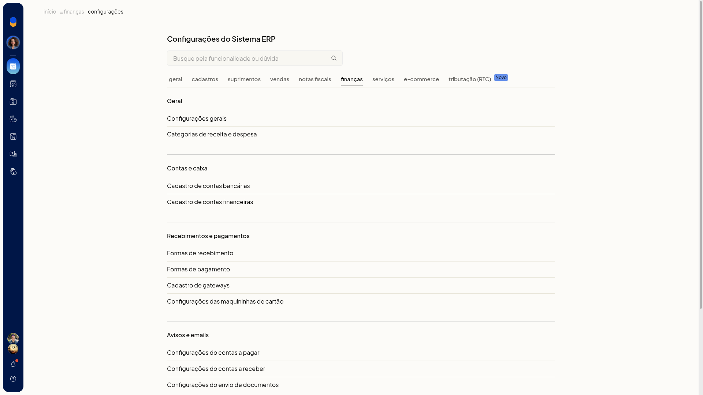
-
Veja um card por maquininha, com o gateway e o status da instalação. No card Stone POS com Instalação concluída, a ação é Detalhes. Nos cards com Instalação pendente, a ação é Continuar configuração. adicionar maquininha fica na mesma lista.
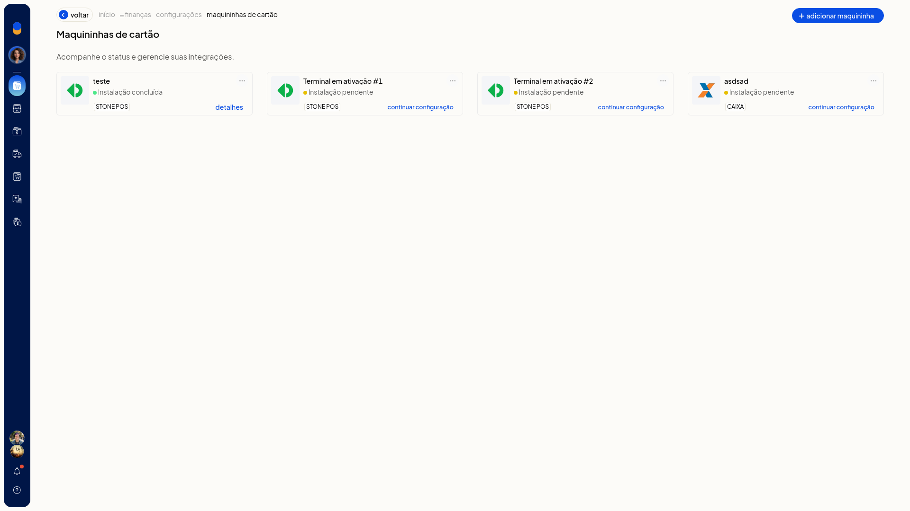
Cadastrar a maquininha Stone
Use este caminho quando a Integração Stone estiver instalada. Na tela, o status visto é PREMIUM INSTALADA.
-
Na lista de maquininhas, clique em adicionar maquininha.
-
Com o limite em 01/01, confira a extensão, a Integração Stone e o upgrade de plano.
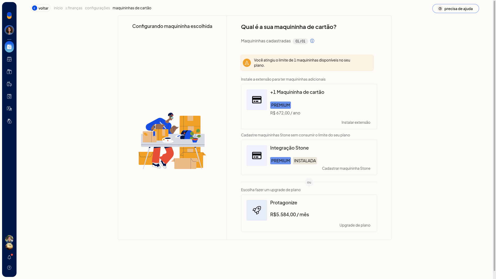
-
Na área Integração Stone, clique em Cadastrar maquininha Stone.
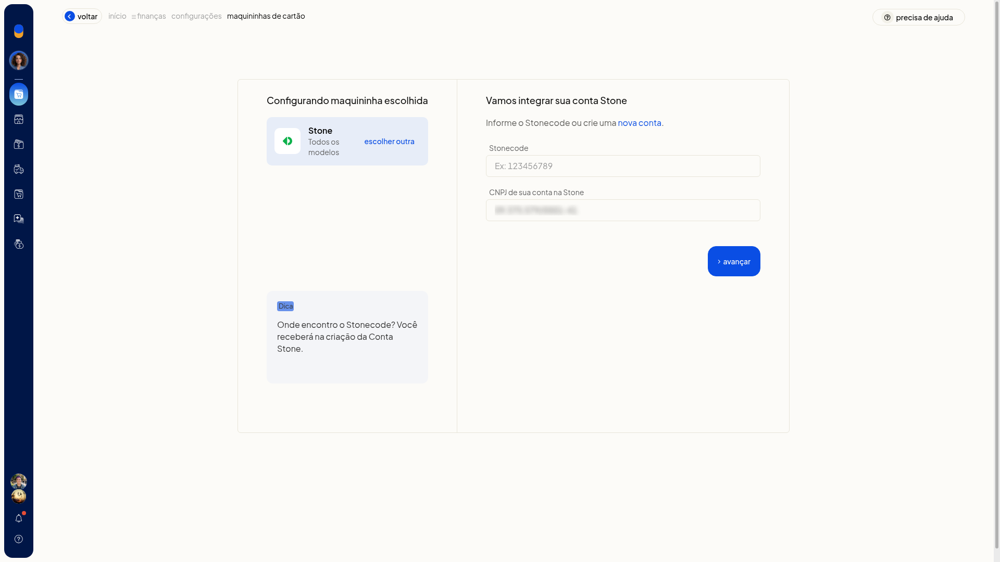
-
Informe Stonecode e CNPJ de sua conta na Stone. A tela mostra um exemplo de Stonecode, como 123456789. Escolher outra volta à tela de limite, sem avançar. O link nova conta abre o pedido de quem ainda não tem conta.
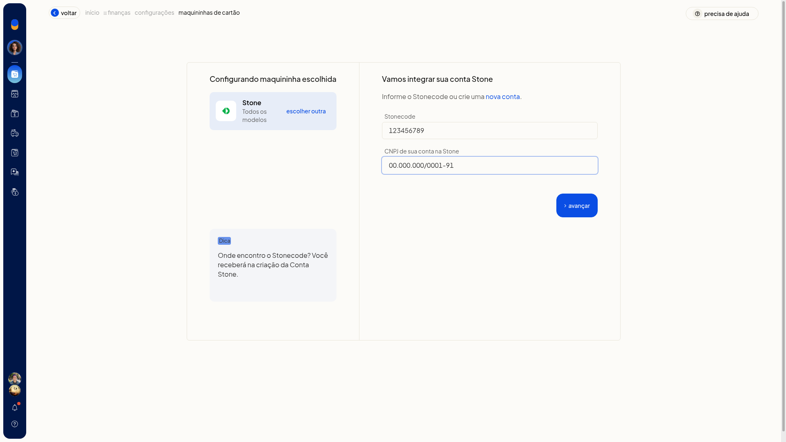
-
Clique em Avançar para seguir o vínculo da conta Stone.
Pedir uma conta Stone
-
No formulário Cadastrar maquininha Stone, clique em nova conta.
-
Na página da Stone, confira as condições comerciais, o vídeo Integração para Pagamentos no PDV com o POS da Stone e o aviso para quem já é cliente Stone.

-
Em Deseja ser cliente Stone? Preencha seus dados, escolha Pessoa Jurídica ou Pessoa Física.
-
Preencha CNPJ, Nome fantasia, Faturamento Mensal Médio, Nome completo, Contato, Email e Observação. Em Faturamento Mensal Médio, escolha a faixa da lista.
-
Marque Ao marcar a caixa, você concorda em receber chamadas e mensagens por meio do número de telefone fornecido acima.

-
Clique em Enviar para enviar o pedido de nova conta.
Acompanhar uma instalação pendente
-
Na lista, no card Stone POS com Instalação pendente, clique em Continuar configuração.
-
Leia a orientação da tela: acompanhe o email e as notificações do ERP. A equipe vincula a conta em até 3 dias úteis e avisa quando a configuração puder continuar. A tela identifica Stone e Todos os modelos.
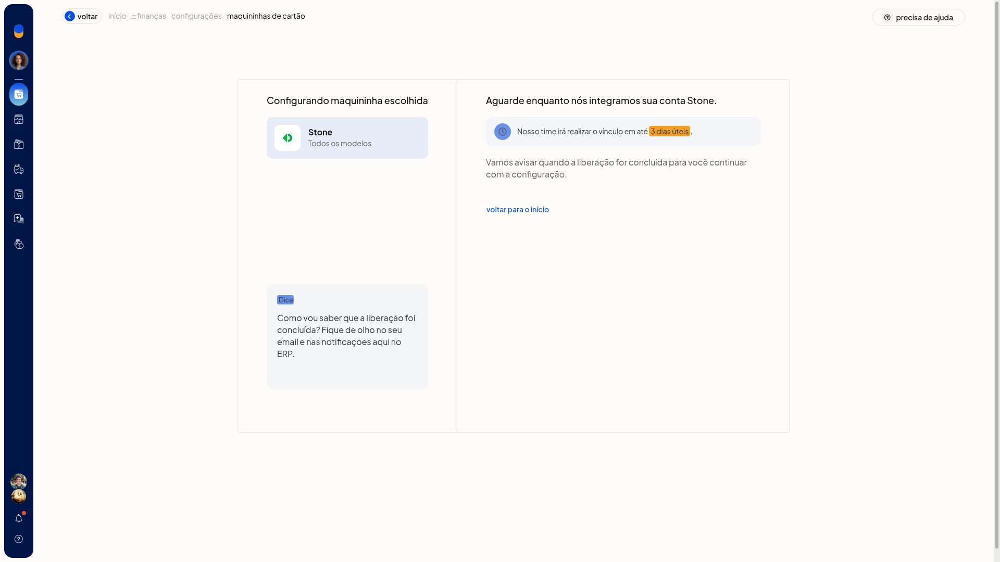
-
Clique em Voltar para o início para retornar à lista, sem confirmar nada.
Configurar o gateway Stone POS
Só configure o gateway quando a maquininha Stone POS estiver com Instalação concluída.
-
Na lista, abra Detalhes da maquininha Stone POS com Instalação concluída.
-
Confira Nome da maquininha, Gateway Stone POS e Terminal (Serial POS).
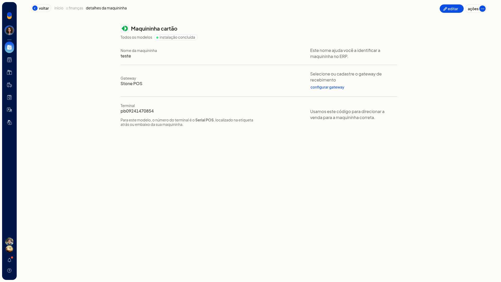
-
Clique em Configurar gateway.
-
Confira os dados do gateway. Cancelar descarta as alterações e volta à lista de gateways. No fim do formulário há o link Gerenciar maquininhas cartão.
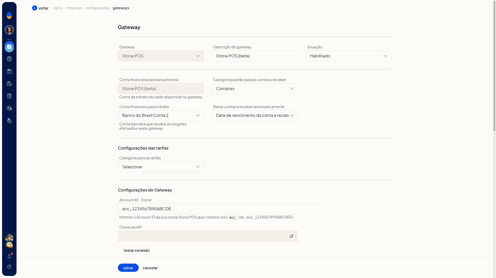
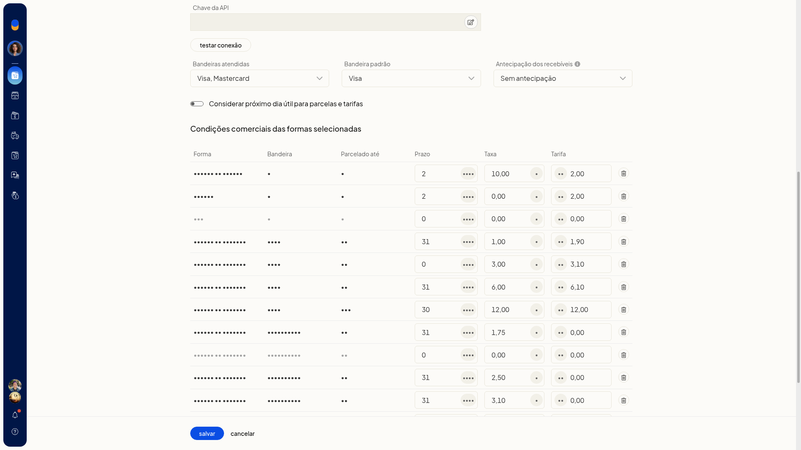
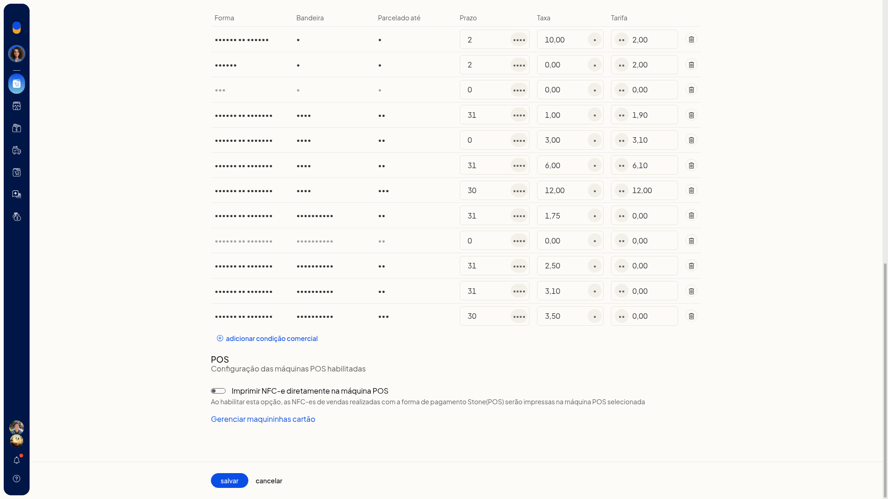
Identificação
- Gateway: Selecione, Pagar.me, Pagar.me 2.0, Wirecard, Stone POS, Cielo, Rede, Getnet, SafraPay, PagBank, Vero, Bin, Sicredi, Caixa, Sipag, PicPay, Redeflex ou Outro. Na maquininha concluída, o valor é Stone POS.
- Descrição do gateway: texto livre.
- Situação: Habilitado ou Desabilitado.
Contas e categorias
- Conta financeira para lançamentos: conta de extrato do saldo disponível no gateway. A lista é das contas da empresa.
- Categoria padrão para as contas a receber: categorias financeiras da empresa, com a opção Selecione.
- Conta financeira para crédito: conta bancária que recebe os resgates efetuados neste gateway. A lista traz as contas da empresa, Stone POS e Criar nova conta.
- Baixar contas a receber automaticamente: Manual, Data de vencimento da conta a receber ou Data da efetivação da venda.
- Categoria para as tarifas: categorias financeiras da empresa.
Stone, bandeiras e condições
- Account ID - Stone: informe o Account ID da conta Stone POS que comece com acc_.
- Chave da API: há dois campos com o mesmo rótulo.
- Bandeiras atendidas: Visa, Mastercard, American Express, Dinners Club, Elo, Hipercard, BNDES ou Outro.
- Bandeira padrão: Selecione, Visa ou Mastercard.
- Antecipação dos recebíveis: Sem antecipação ou Antecipado.
- Considerar próximo dia útil para parcelas e tarifas: caixa de seleção.
- Condições comerciais: tabela com Forma, Bandeira, Parcelado até, Prazo, Taxa e Tarifa. Clique em adicionar condição comercial para incluir outra linha.
- Imprimir NFC-e diretamente na máquina POS: ao habilitar, as NFC-e de vendas com a forma de pagamento Stone (POS) são impressas na máquina POS selecionada.
- Para testar antes de gravar, clique em testar conexão.
- Clique em Salvar para gravar o gateway. Cancelar descarta as alterações e volta à lista de gateways.
Editar o nome da maquininha
-
Em Detalhes da maquininha com instalação concluída, clique em Editar.
-
Altere Nome da maquininha. Gateway e Terminal (Serial POS) também aparecem no formulário.
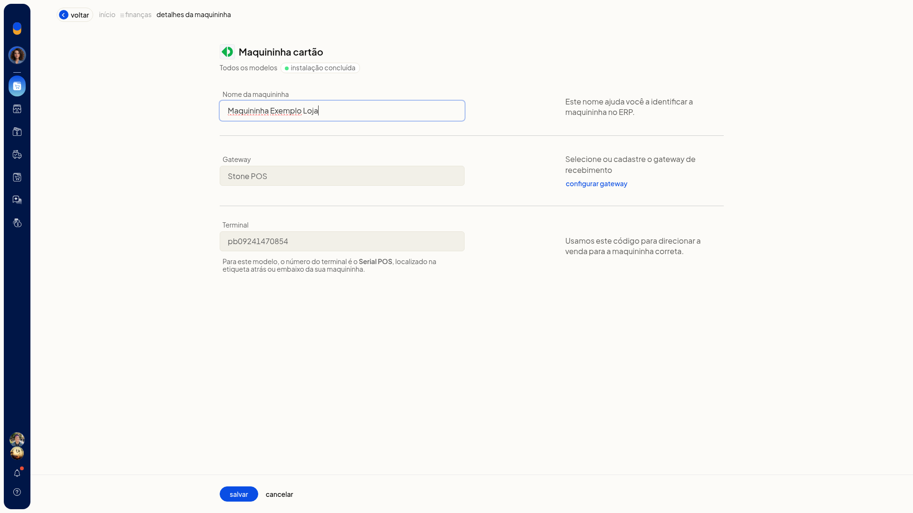
-
Clique em salvar para gravar a alteração. cancelar descarta e restaura o nome anterior.
-
Em Ações, clique em Excluir maquininha para iniciar a exclusão. A única opção desse menu é Excluir maquininha.
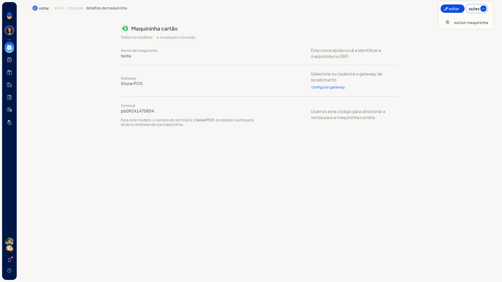
Instalar a extensão de mais uma maquininha
-
Na lista, clique em adicionar maquininha.
-
Na oferta +1 Maquininha PREMIUM, clique em Instalar extensão.
-
No painel Instalar Extensão, confira +1 Maquininha de cartão e o valor anual. A extensão adiciona uma integração extra de maquininha ao plano atual. Feche o painel para voltar à tela de limite sem contratar.
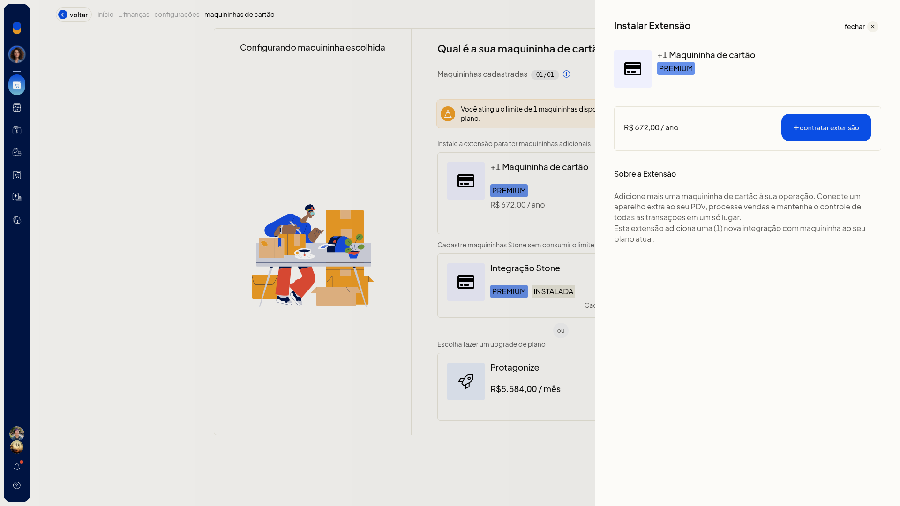
-
Clique em contratar extensão para confirmar a compra.
Comparar o que o plano libera no PDV
-
Na tela de limite do plano, abra Upgrade de plano.
-
Confira o plano atual, a forma de cobrança e os cards Avance, Construa, Impulsione e Domine. Alterne entre mensal e anual se quiser. No card Avance, o PDV aparece como frente de caixa. No card Construa, o PDV inclui abertura e fechamento de caixa e também desconto para gerente e fechamento de caixa.
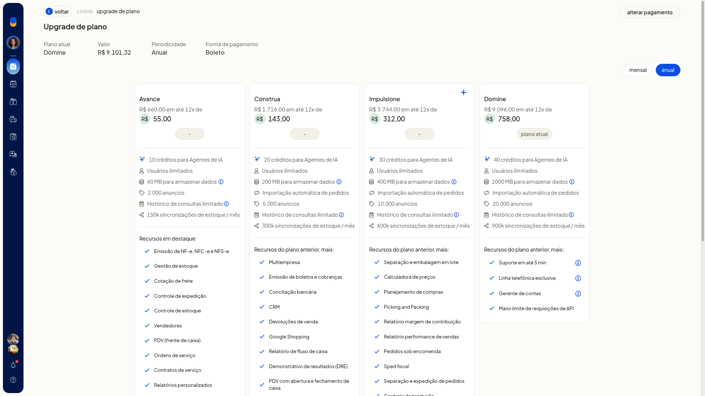
-
Abra Compare os planos. A tabela abre na categoria Vendas.
-
Na categoria Vendas, confira o que cada plano inclui:
-
PDV (frente de caixa) e Maquininhas integradas ao PDV aparecem em todos os planos.
-
Controle de caixa do PDV e Desconto para gerente e fechamento de caixa começam em Construa.
-
Relatório de performance de vendas começa em Impulsione.
-
Nº de Maquininhas gratuitas: Avance não inclui; Construa, Impulsione e Domine incluem 1 integração gratuita; Protagonize é Personalizado.
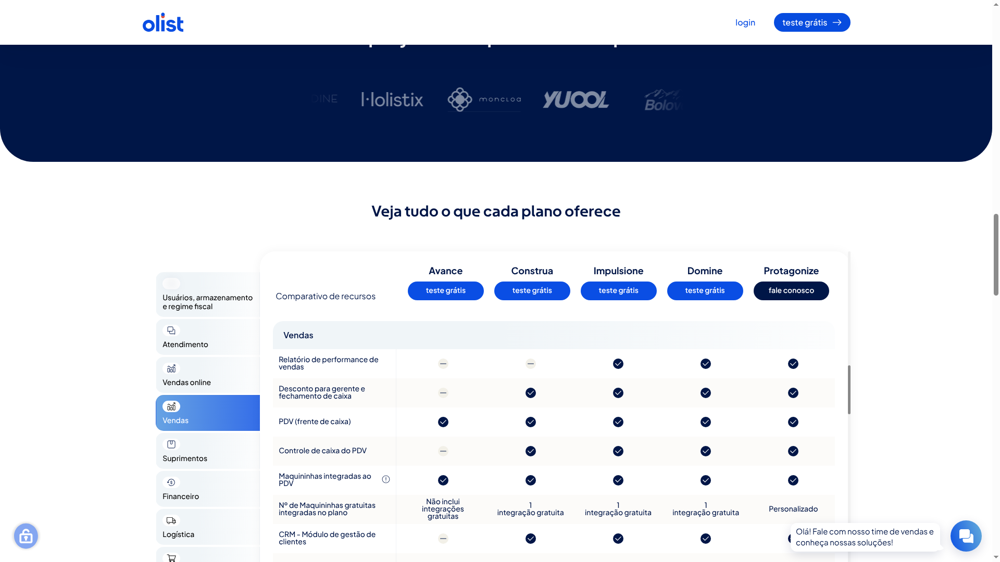
-
No rodapé da troca de plano, veja também Plano Protagonize e agendar com especialista. Use essa tela para localizar a frente de caixa, o controle de caixa e as maquininhas integradas antes de contratar.

Consultar a Stone e a sangria no PDV
-
Acesse Vendas > PDV.
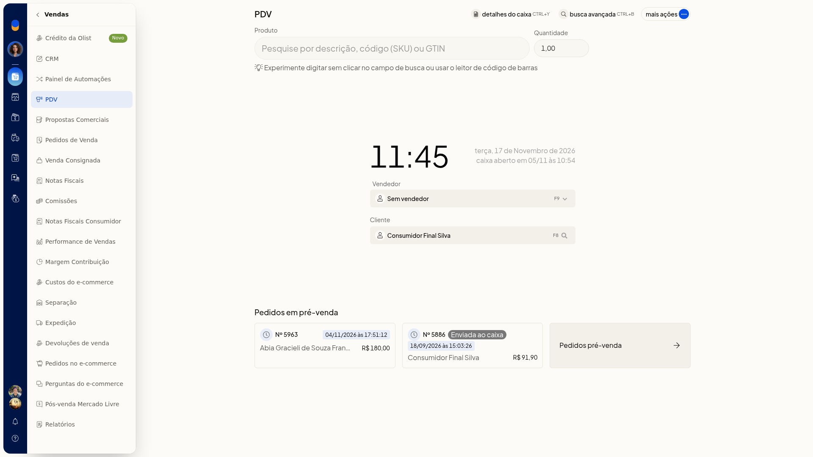
-
Em Mais ações, abra pedidos em aberto - Stone. No mesmo menu estão as rotinas de sangria, reforço e fechar caixa.
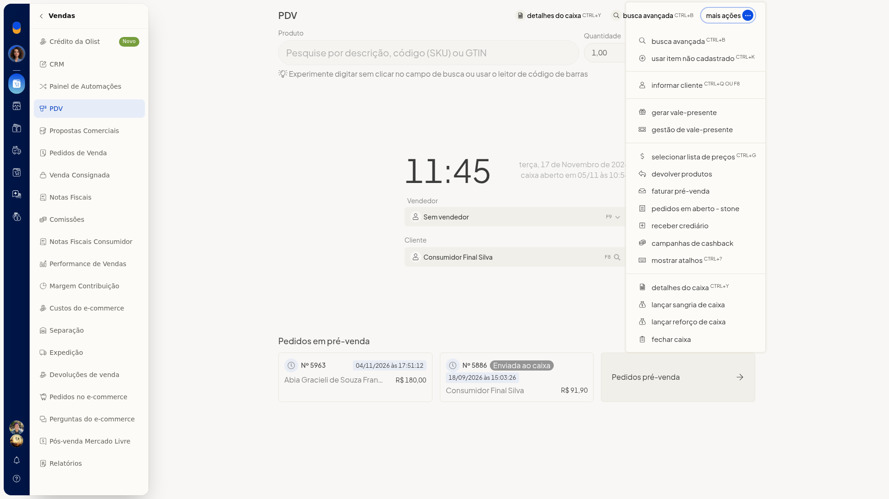
-
Se não houver pendência, a tela informa Não há transações pendentes para esta Empresa. Há ações para cancelar as selecionadas e para sair. Clique em sair para fechar sem alterar nada.
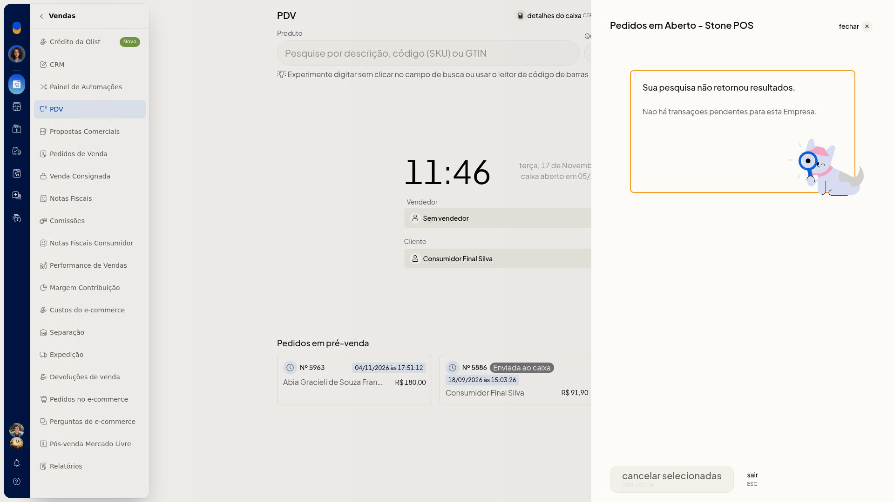
-
Ainda em Mais ações, abra a sangria.
-
Informe Valor (R$) e Observação. Se quiser, marque Imprimir comprovante.
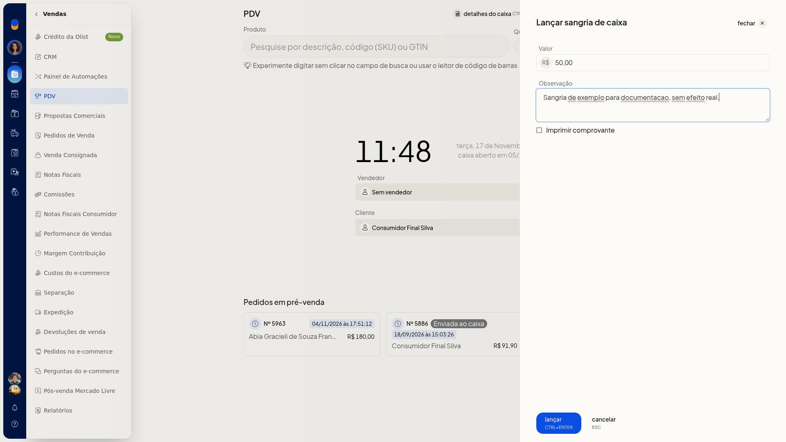
-
Clique em Lançar para confirmar a sangria. O atalho é CTRL+ENTER. cancelar descarta o lançamento, com o atalho ESC.
Resultado
Na lista, o card com Instalação concluída oferece Detalhes e o card com Instalação pendente oferece Continuar configuração. No PDV, pedidos em aberto - Stone informa quando não há transações pendentes para a empresa.